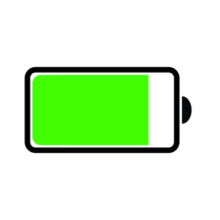
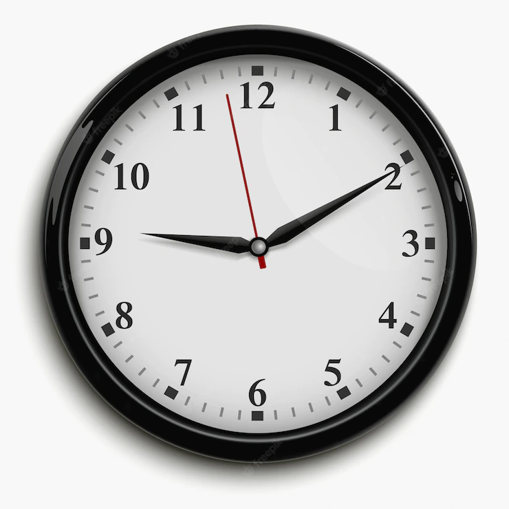

A Játékos adatai
Alaphelyzet
- Tapasztalati szint: 0 XP
- Energia: 100%
- Veszély: 0%
- Pénz: 2500Ft
- Idő: 9:00
Tapasztalati szint
A játékos alapból 0 tapasztalati ponttal rendelkezik.
Úgy tud tapasztalati pontokat szerezni, hogy elmegy dolgozni, illetve megnéz előadásokat színházban.
Minden megnézett előadással + 1 tapasztalati pontot kap.
A játékos munkától függően különböző tapasztalati pontot kap.
Minél könnyebb egy munka, annál kevesebb XP jár érte.
Energia

A játékos energiaszintje alapból 100%.
Az energia folyamatosan csökken a játék során.
Energiacsökkenés nagysága a helytől függ, ahova menni szeretnénk.
Energiát kajavásárlással lehet visszatölteni.
Energiacsökkenés akkor is bekövetkezik, ha a játékos dolgozik.
Csak akkor dolgozhat, ha több, mint 35% energiája van a játékosnak.
"Az energia nem vész el csak átalakul."
Veszély
A játékos alapból 0% veszéllyel kezdi a játékot.
A veszélyhelyzetet azzal növelheti, ha nem ad kölcsön a c típusú usbk-nek.
A veszélyhelyzetet azzal tudja csökkenteni, hogy elmegy az edzőterembe(Galaxy gym) kigyúrni magát vagy ruhát vásárol magának.
Ezenkívül ha a játékos veszélyérzete magas, akkor nagyobb esély van arra, hogy kirabolják a c típusú usb-k.
Pénz

A játékos a játék elején rendelkezik egy előre meghatározott kezdőtőkével. (2500Ft)
A játékos célja, hogy a játék során minél több pénzt halmozzon fel, hiszen az az álma hogy elmeneküljön Bécsbe erről a c-telephelyről.
A bécsi vonatjegy azonban iflálódik(15%) minden nap elteltével, úgyhogy a játékosnak ezzel is kalkulálnia kell.
Pénzt a játékos értelemszerűen úgy tud szerezni, hogy elmegy dolgozni különböző helyekre(Árkád, Gyorséttermek, Színház).
A pénzt el lehet költeni ruhákra, kajára.
"Kis pénz, kis foci" - PSGOgli7
Idő
